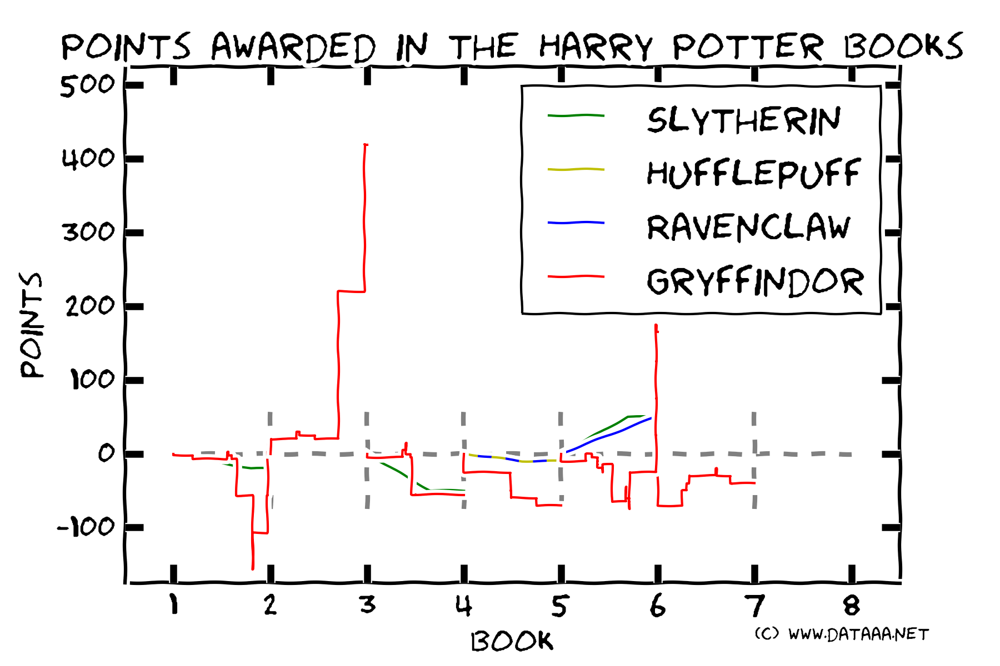

10 points to Gryffindor!
A brief hiatus here on the blog whilst I relocated to the best city in the world, London. To blow off some cobwebs, I flexed my Python/Matplotlib muscles and took a look at the Harry Potter books by J.K. Rowling. Parsing the text of the books, I extracted the awards of house points by various Hogwarts teachers, and here they are!

Unfortunately there is not a complete record of points awarded in the books... in a rare instance, the final totals are given at the end of Harry Potter and the Philosopher's Stone: Gryffindor 482 pts, Slytherin 472 pts, Ravenclaw 426 pts, Hufflepuff 352 pts. This shows that we're missing the award of 469 points to Gryffindor and huge numbers of points for the other houses. Clearly we're missing many of the points awarded through Quidditch victories, but there must be multiple other gains and losses which Rowling, understandably, does not bother to cover.
Which pupils are the most rewarded, and which are the biggest liabilities? Look below!
| Pupil | Awarded | Forfeited | Total |
|---|---|---|---|
| Ron Weasley | 305 | 103.33 | 201.67 |
| Harry Potter | 350 | 265.33 | 84.67 |
| Hermione Granger | 195 | 105 | 80 |
| Neville Longbottom | 80 | 53.33 | 26.67 |
| Draco Malfoy | 50 | 70 | -20 |